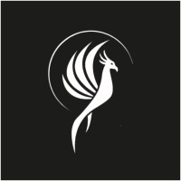

nov. 2023 – avr. 2026 · 2 ans 6 mois
Responsable suivi d'étude nov. 2025 – avr. 2026
Présidente nov. 2024 – nov. 2025
Vice-présidente nov. 2023 – nov. 2024
Gestion et accompagnement des membres, suivi des projets et pilotage de la structure — de la vice-présidence à la présidence, j'ai porté le développement de la Junior à chaque niveau de responsabilité.
Animation de la vie associative, relations avec les entreprises partenaires et suivi opérationnel des études réalisées pour des clients externes.